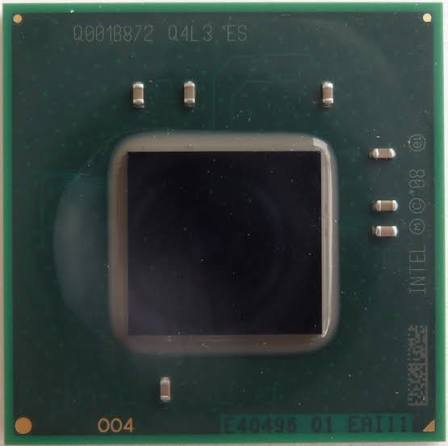
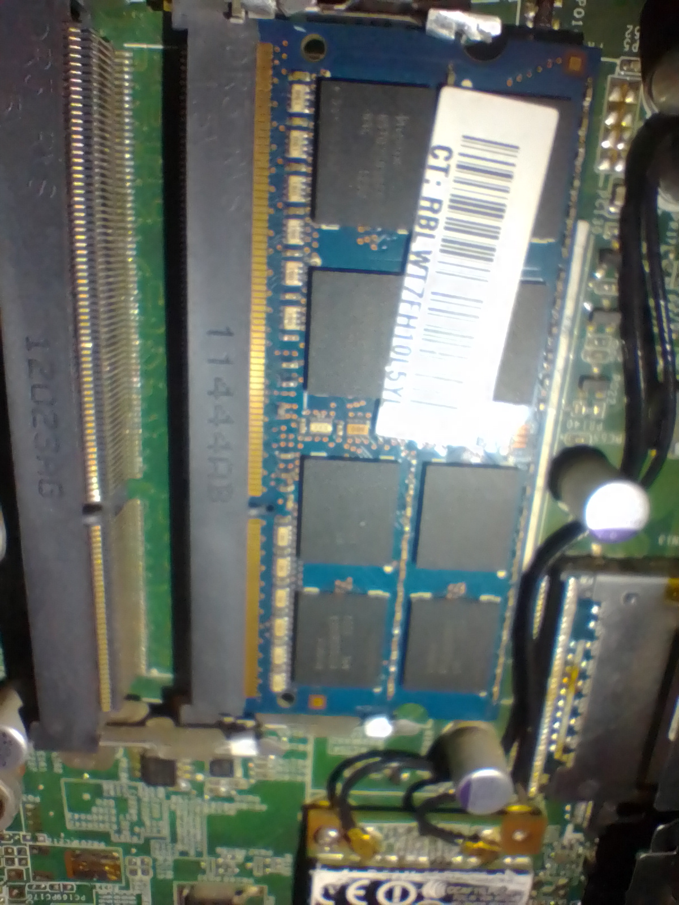
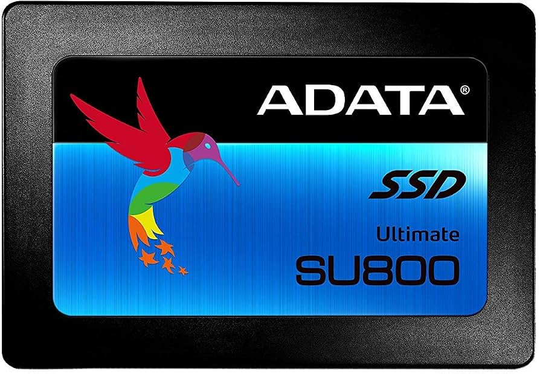
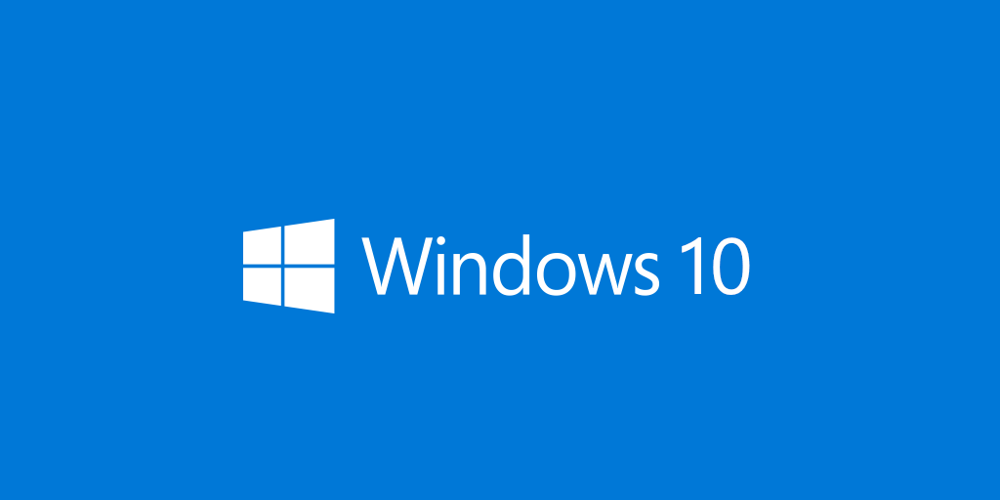

Sobre esto
Esto es una página en donde muestro las especificaciones actuales de mi PC.
1. Procesador

El Intel® Atom™ D525
es un procesador de doble núcleo lanzado en el segundo trimestre de 2010,
diseñado principalmente para ordenadores de sobremesa básicos (nettops),
sistemas integrados y servidores de almacenamiento en red (NAS).
Pertenece a la arquitectura Pineview (plataforma Pine Trail)
y está fabricado en un proceso de 45 nanómetros.
2. Tarjeta Gráfica
La Intel Graphics Media Accelerator 3150
es la tarjeta gráfica integrada presente dentro del propio encapsulado del procesador Intel Atom D525.
Fue lanzada a principios de 2010 como una evolución ultra-básica pensada exclusivamente para tareas de escritorio
elementales y consumo energético reducido.
Deriva directamente de la arquitectura del antiguo chip gráfico Intel GMA 950 (lanzado en 2005),
por lo que incluso para su época de lanzamiento era un chip con tecnología antigua.
NOTA: tengo el controlador de video Sherry 1.3 instalado
Fuente: Wikipedia3. Memoria RAM

Tengo 4GB DDR2 a 800MHz instalados en un solo slot de la tarjeta madre. Una cantidad suficiente para lo que hago, por ahora no tengo problema por la RAM.
Fuente: ElmichiYT (imagen propietaria)4. Almacenamiento

El ADATA Ultimate SU800 es una unidad de estado sólido (SSD) en formato SATA III de 2.5 pulgadas (7 mm).
Fue uno de los modelos más populares de ADATA por democratizar el uso de memorias 3D NAND.
A diferencia de las SSD ultra-económicas, el SU800 destaca por incluir caché DRAM,
lo que evita los bajones drásticos de rendimiento durante transferencias pesadas o al usarlo como
disco principal del sistema operativo.
5. Sistema operativo

Tengo Windows 10 Pro de 32 bits (anteriormente Home). Lo malo de usar un sistema operativo de 32 bits es que estoy limitado a 4GB de memoria RAM. Encima, el procesador es capaz de ejecutar instrucciones de 64 bits pero por temas del pasado (donde todavía no tenía a la mano dicha PC) se le instaló Windows de 32 bits.
Fuente: ElmichiYT